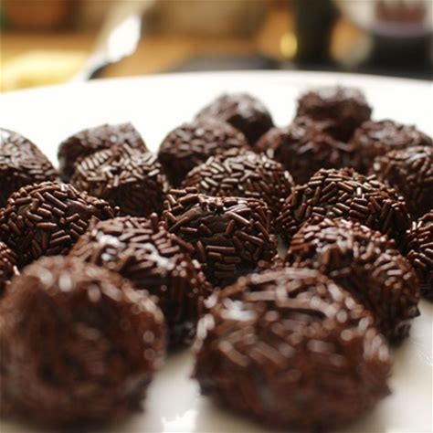

Brigadeiro

Description
The brigadeiro is a traditional Brazilian dessert. It is made of condensed milk, cocoa powder, butter, and chocolate sprinkles covering the outside layer.
Ingredients
- 1 (14 ounce) can sweetened condensed milk
- 3 tablespoons unsweetened cocoa
- 1 tablespoon butter
How to prepare it:
- Combine condensed milk, cocoa, and butter in a medium saucepan over medium heat. Cook and stir until thickened, about 10 minutes. Remove from heat and let rest until mixture is cool enough to handle.
- Use your hands to shape into small balls and place on a serving plate. Can be eaten at once or chilled until serving.